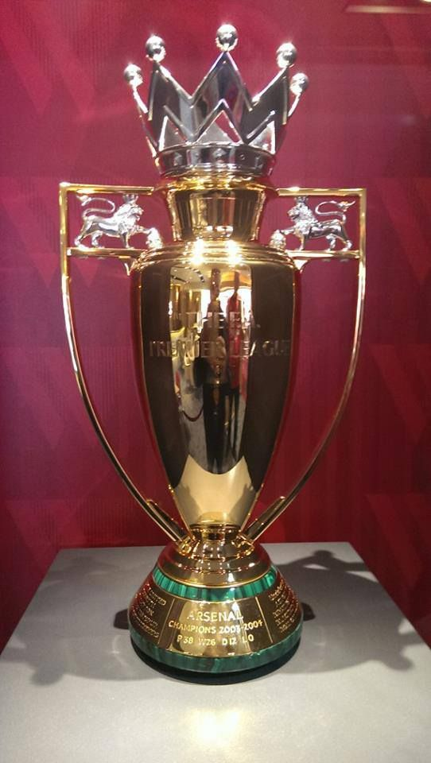

Arsenal's history can be divided into 6 eras, and a summary of each is given below.
1886 - 1919: During this period, the club was founded. The club's name
was changed from Dial Square to Royal Arsenal in 1886, Woolwich Arsenal in
1893, and then to Arsenal around 1914.
1919 - 1953: The club hired Herbert Chapman to be the manager in 1925, and Arsenal
was quite successful on the pitch. Chapman was instrumental in transforming the
club and successfully implemented a variation of the W-M formation. Unfortunately,
he died in the 1933/34 season. Arsenal lost many players in World War 2 and had a lot of
debt from reconstructing a section of the Highbury stadium called the North Bank Stand.
1953 - 1986: The years of mediocrity. Arsenal failed to win a trophy for 18 years. They also
lost multiple finals; the only title they won was the 1979 FA Cup.
1986 - 1996: George Graham was the manager, and the club won a few titles. He was fired in
1995 because of bribery.
1996 - 2018: The Gunners appointed Arséne Wenger, who is regarded as the best Arsenal manager in
history. He made Arsenal an attacking force. French players like Thiery Henry and Patrick Vieira
were instrumental to his success. He was the mastermind of "The Invincibles", a nickname given to the
Arsenal team that won the 2003/04 season without losing a match. During his tenure, Arsenal won the Premier
League 3 times, the FA Cup 7 times and the English Super Cup 7 times. Arsenal also came agonizingly
close to winning their first Champions League title in 2006 but was defeated by Barcelona. The club moved
to the Emirates Stadium and never reached the same heights they did when they still played at Highbury. Wenger left on 13 May 2018.

Arsenal's "Invincibles" trophy. 2003/04 season
2018 - current: After Wenger left, the club hired Unai Emery. Although Arsenal reached the Europa league final
under his tenure, the club's overall performance was underwhelming. He was replaced with Mikel Arteta on 20 December 2019. Arteta
won the FA Cup in his first season and is the current manager as of writing.